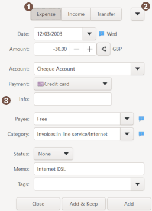
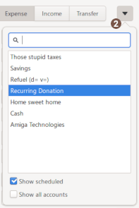
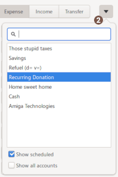

Using transaction dialog
 Type of transaction
Type of transaction
the type of the transaction, between: Expense / Income / Transfer.
Transfer is the internal transfer of <v5.3.
 Use a template
Use a template
Select a source template definition to fill in the transaction dialog fields.
 Transaction details
Transaction details
| Date | date of the transaction (dd.mm.yy).
|
|---|---|
| Amount | amount of the transaction - the +/- button toggle between income/expense |
| Account | account the transaction should be attached to. |
| Of notebook 2 To account |
these fields appears depending on the payment selected: for cheque: select the 2nd cheque notebook for internal transfer: select the destination account |
| Payment | payment for the transaction. It will be displayed as small icons. See the lexicon for payment detail |
| Info | additional informations such as real date or value date, cheque numbers, other numbers related to the transaction. this field is automatically filled for cheque numbers. |
| Payee |
payee of the transaction, see payee definition for further details.
|
| Category | category of the transaction, see category definition for further details.
|
| Status |
The different status a transaction can have:
|
| Memo | memo of transaction. and optionally vehicle cost data's, see vehicle cost. |
| Tags | tags of the transaction, see tag definition for further details. |